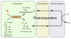

photorespiration

Definition: Photorespiration (also known as the oxidative photosynthetic carbon cycle or C2 cycle) refers to a process in plant metabolism where the enzyme RuBisCO oxygenates RuBP, wasting some of the energy produced by photosynthesis. The desired reaction is the addition of carbon dioxide to RuBP (carboxylation), a key step in the Calvin–Benson cycle, but approximately 25% of reactions by RuBisCO instead add oxygen to RuBP (oxygenation), creating a product that cannot be used within the Calvin–Benson cycle. This process lowers the efficiency of photosynthesis, potentially lowering photosynthetic output by 25% in C3 plants. Photorespiration involves a complex network of enzyme reactions that exchange metabolites between chloroplasts, leaf peroxisomes and mitochondria.
Source: Wikipedia
Wikipedia Page (Something wrong with this association? Let us know.)
Wikidata Page (Something wrong with this association? Let us know.)